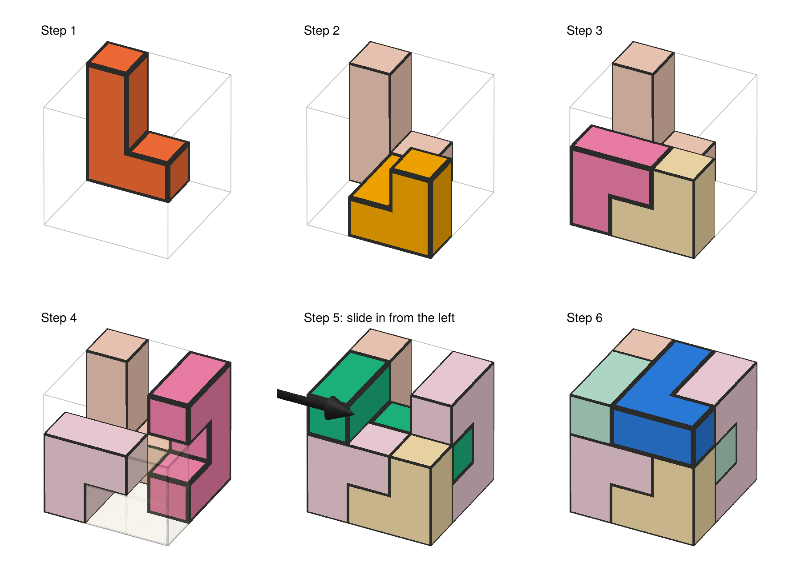
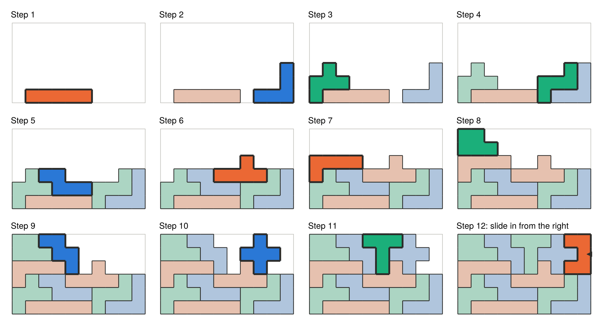
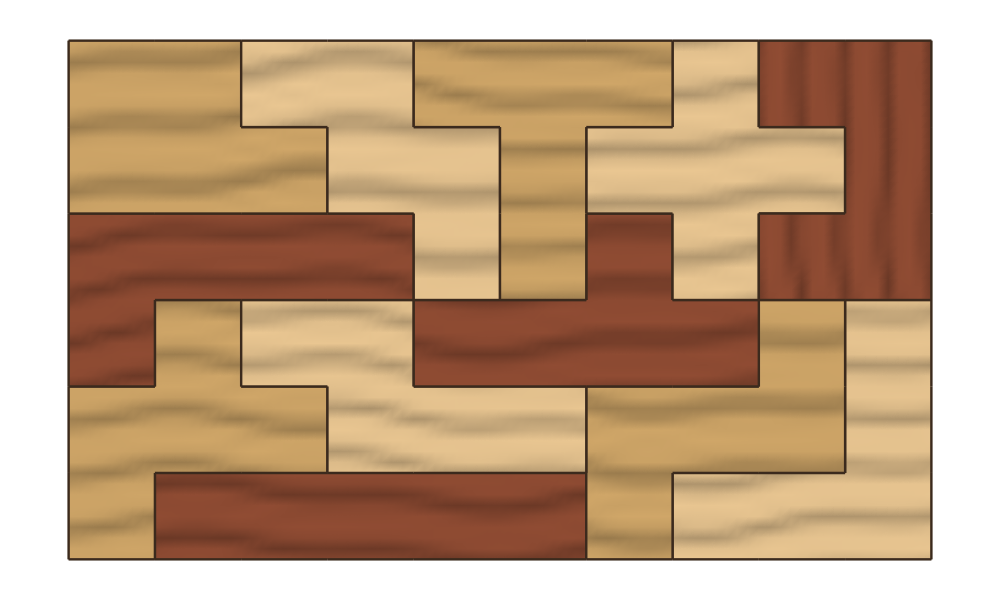
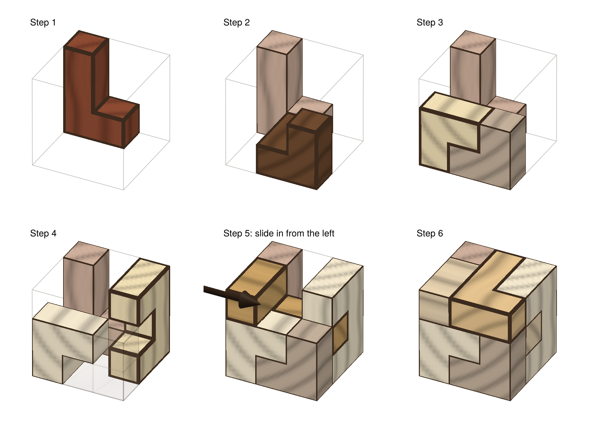

Assembly and plots
Building order
assembly_order chooses an order in which to put a solution together by hand. Pieces go in bottom-up, each resting on the floor or on pieces already placed. When the order is for a picture (view and right directions are given; the plotting functions do this themselves), it also builds from the back and left and prefers pieces that will be visible, so each new piece lands in front of the work so far.
Sliding pieces in
A piece can't always be dropped in from above: part of it may need to tuck under an overhang. insertion works out how a piece can be moved into place, given the pieces already there, as an Insertion:
:drop: lowered straight down;:slide: pushed straight in from one side;:path: a route of several straight slides;:blocked: it can't get in at all.
Pieces never pass through the floor. assembly_plan gives the insertion for every step of an order, and isassemblable says whether a solution can be built one piece at a time at all.
The order from assembly_order never paints itself into a corner: each piece it picks can be slid into place, and the remaining pieces can still all be added afterwards, whenever the solution can be built that way at all. This can be checked quickly, because removing a piece from a partly built puzzle never stops another piece from being removed. So taking pieces off the finished puzzle, in any workable order, shows whether a set of pieces can be built, and the reverse of that order is a way to build it.
For the 3×3×3 puzzle from the home page, 10 of its 24 solutions need a piece slid in from the side. The instructions say so and show the way in with an arrow:

Plots
Plotting is provided by a package extension. Load a Makie backend to use it:
using CairoMakie # or GLMakie for interactive 3D
plot_solution(sol) # the finished puzzle
plot_steps(sol) # one numbered panel per step
animate_assembly(sol, "assembly.gif") # one frame per stepIn each step the piece just placed is drawn in full colour with a heavy outline, and the pieces before it are muted. In 3D, a placed piece that would hide the new one from view is drawn as a faint ghost, so pieces that go inside the shape can still be seen.
Pieces are coloured so that touching pieces always differ (piece_coloring). Colours never carry meaning on their own, since every piece also has an outline.

Wood
style = :wood draws the pieces as wood. Each piece gets a wood tone, with grain running along its length that wraps around its corners:
plot_solution(sol; style = :wood)
plot_steps(sol; style = :wood)

Pass colors to choose your own colours or wood tones.